M.TECH PROJECT · IIT DELHI · 17 NOV 2026
What the app collects, what broke in the first deployment, how the new app did on the same phones, and the dashboards built on the data
Data: Firestore and InfluxDB, 26 Aug – 17 Nov 2026 · 1.02 million samples · 19 phones
WHAT THE APP COLLECTS
| What | How often | Why we need it |
|---|---|---|
| Signal: RSRP, RSRQ, SINR | 5 s | Coverage quality: the value on every map and grid |
| Serving cell: operator, cell ID, PCI, TAC | 5 s | Which tower serves which spot, and when the phone switches |
| Radio: 4G or 5G, band, ARFCN | 5 s | Which frequency covers which area; when 5G falls back to 4G |
| GPS latitude and longitude | 5 s | Puts each sample in a grid cell on the campus map |
| Phone’s traffic, kbps (app’s own excluded) | 5 s | Shows whether the phone was in use; not a speed test |
| Screen on or off | 5 s | Explains gaps: Android slows apps when the screen is off |
| Battery, memory, storage | 15 min | Spots phones that are likely to stop the app |
| Phone model, Android version, restart events | per session | Compare phones; find out why logging stopped |
THE FIRST VERSION · AUG – OCT
Writes each sample to a CSV file for the session, on the phone.
On Stop, the whole file is uploaded to Firebase Storage.
A script, run by hand, copies new files to a local folder.
A second script loads the CSV rows.
Map dashboard, updated only after the files were loaded.
NOTHING LIVE
Data arrived only after Stop, often hours or days after it was taken.
TIMES WITHOUT DATES
Rows held only HH:mm:ss; the date had to come from the upload time.
MANUAL STEPS
Someone had to run the download and load scripts each time.
THE CURRENT VERSION · SINCE 13 OCT
Takes a sample every 5 s and uploads a batch every 60 s. Batches wait in a queue while offline.
Google’s cloud database. Each phone signs in anonymously and can only write its own data.
A Python script that receives each new batch within seconds and passes it on.
Time-series store, kept 180 days. Coverage grid rebuilt every 30 min.
Live and Map dashboards, view-only, on the IITD network.
PRELIMINARY DEPLOYMENT · 13–25 OCT
SAMSUNG GALAXY M32 · ANDROID 12
108 h
logged in 7 sessions over 11 days. Meant to run around the clock.
MOTOROLA G35 5G · ANDROID 15
2 h
logged, spread over 464 sessions: Android kept killing and restarting the app.
NOTHING A001 · ANDROID 16
1 session
A short test run on 17 Oct.
Hours = 5 s samples received × 5 s. Before this, an older CSV version of the app ran from late August on other phones too (OnePlus 11R ×2, Xiaomi, Motorola edge 50 neo, Infinix); that data is kept as history.
GPS LOCATIONS
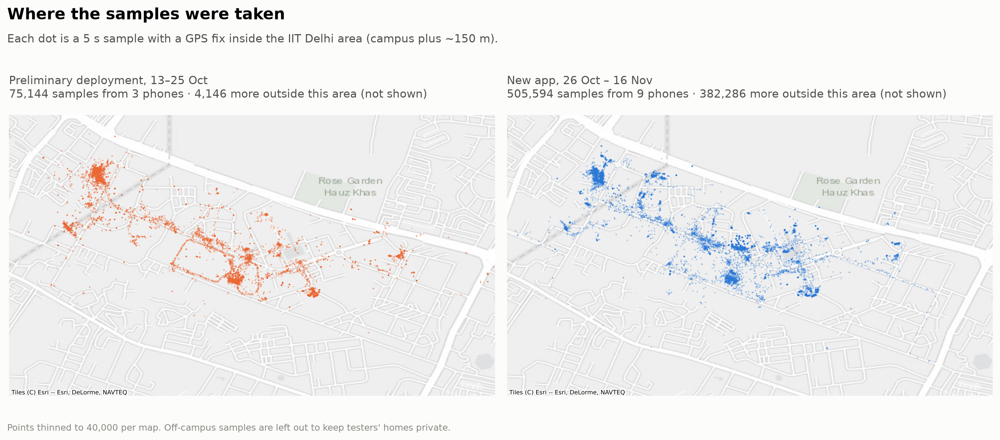
PRELIMINARY DEPLOYMENT · SESSIONS
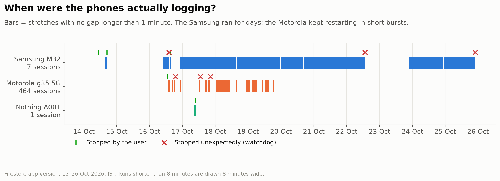
PRELIMINARY DEPLOYMENT · PROBLEM 1 OF 3
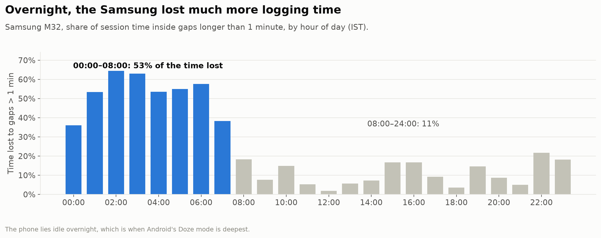
1,593 of the 1,596 gaps longer than a minute began with the screen off. Uploads were not the problem: 90% of batches reached Firestore within 10 s and none were lost.
PRELIMINARY DEPLOYMENT · PROBLEM 2 OF 3
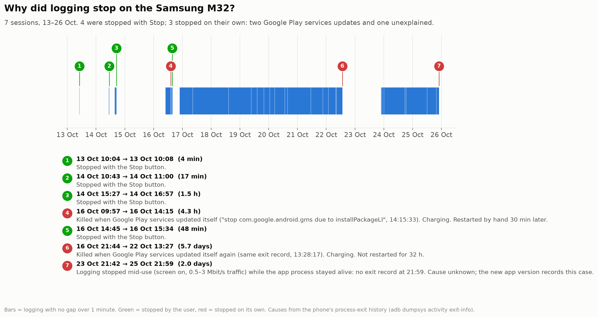
PRELIMINARY DEPLOYMENT · PROBLEM 3 OF 3
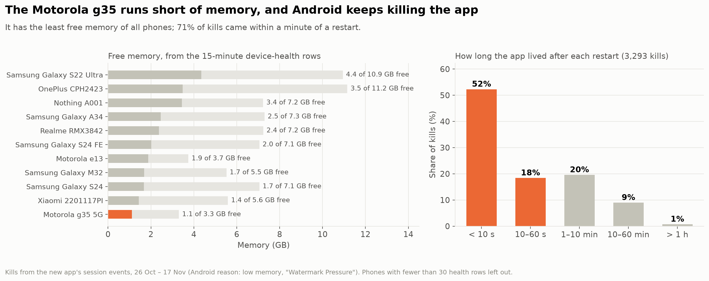
APP CHANGES · INSTALLED 26 OCT
| Problem seen | Change in the new app |
|---|---|
| Gaps whenever the screen was off (Doze) | A partial wake lock keeps the 5 s timer running |
| A killed app came back as a new, empty session | Resumes the same session, restarted by Android or by a watchdog that checks every 15 min |
| No record of why logging stopped | Each session stores events: Android’s exit reason, restarts, gaps and timeouts |
| Throughput counted the app’s own uploads | The app’s own traffic is subtracted |
Testers must also set
“Allow all the time” for location, and no battery optimisation for the app
NEW APP · 26 OCT – 17 NOV
| Phone | Android | Operator | Days logged | Hours logged |
|---|---|---|---|---|
| Samsung Galaxy M32 | 12 | Vi | 22 | 505 |
| Motorola e13 | 13 | Vi | 23 | 493 |
| Motorola g35 5G | 15 | Vi | 20 | 149 |
| Samsung Galaxy S24 FE | 16 | Airtel | 4 | 26 |
| Realme RMX3842 | 16 | Airtel | 3 | 15 |
| Samsung Galaxy S24 | 16 | Airtel | 3 | 14 |
| Nothing A001 | 16 | Vi | 5 | 13 |
| Samsung Galaxy A34 | 16 | Airtel | 2 | 13 |
| Samsung Galaxy S22 Ultra | 16 | Jio | 2 | 11 |
| OnePlus CPH2423 | 15 | Airtel | 2 | 6 |
| Xiaomi 2201117PI | 13 | Jio | 1 | 5 |
Days with at least 100 samples. Hours = samples × 5 s. A twelfth phone (vivo V2518) sent only 7 samples.
NEW APP · DAY BY DAY
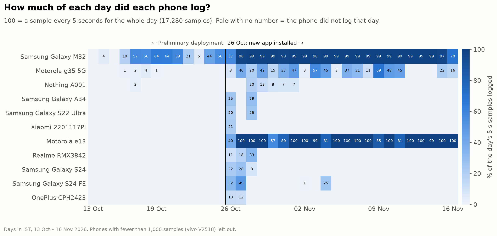
SAME PHONES, BEFORE AND AFTER
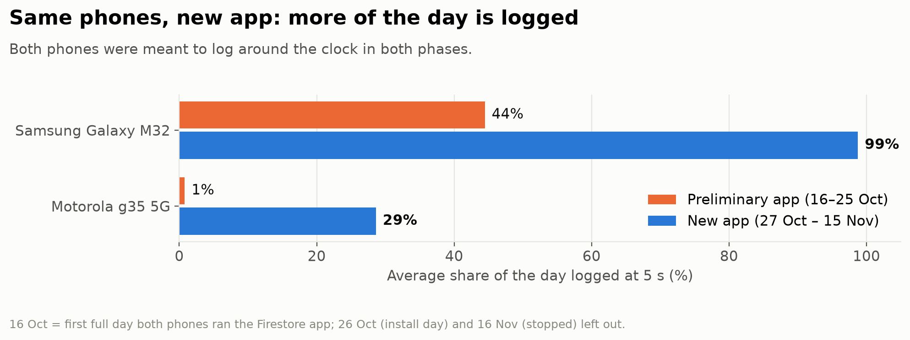
SAMSUNG GALAXY M32
One session for 21 days (26 Oct – 16 Nov). Restarted by the watchdog 5 times; 1.8 h lost in 511 h.
MOTOROLA G35 5G
Killed by Android about 3,300 times. Each time it resumed, typically within 10 s, but long gaps remain.
Average of daily shares; preliminary 16–25 Oct, new app 27 Oct – 15 Nov. The Nothing A001 is left out: its tester ran short daytime sessions in both phases.
WHAT STILL STOPS LOGGING
| Phones | What happened | Next fix |
|---|---|---|
| Samsung S22 Ultra, S24, S24 FE, A34; Realme (Android 16) | Android ended the service after 6 hours, the app crashed and could not resume. 15 sessions. | Drop the “data sync” service type, which Android 15+ limits to 6 h a day; keep “location” |
| Motorola g35 (Android 15) | Killed for low memory about 3,300 times; resumed each time | Lighter service; ask the tester to close heavy apps; a phone with more memory |
| Samsung M32, Motorola e13 | Google Play services updates kill the app; the watchdog brings it back after 20 min to 10 h | A faster watchdog than every 15 min |
| Xiaomi | Phone’s cleaner app killed it; no background location, so no resume | Setup checklist at install |
| Nothing A001 | Short daytime sessions, each ended after the app was swiped away | Explain to the tester that it should keep running |
DASHBOARDS
SPATIAL
Campus split into squares of 27–220 m. Each square shows the median signal per operator: Jio, Vi and Airtel side by side.
TEMPORAL
For a phone that stays put, signal by hour and day, filtered by phone.
HISTORICAL
Every sample from both app versions, on a map with any time range.
tejas.cse.iitd.ac.in:3300 · /d/networklogger-live and /d/networklogger-map · IITD network only, view-only
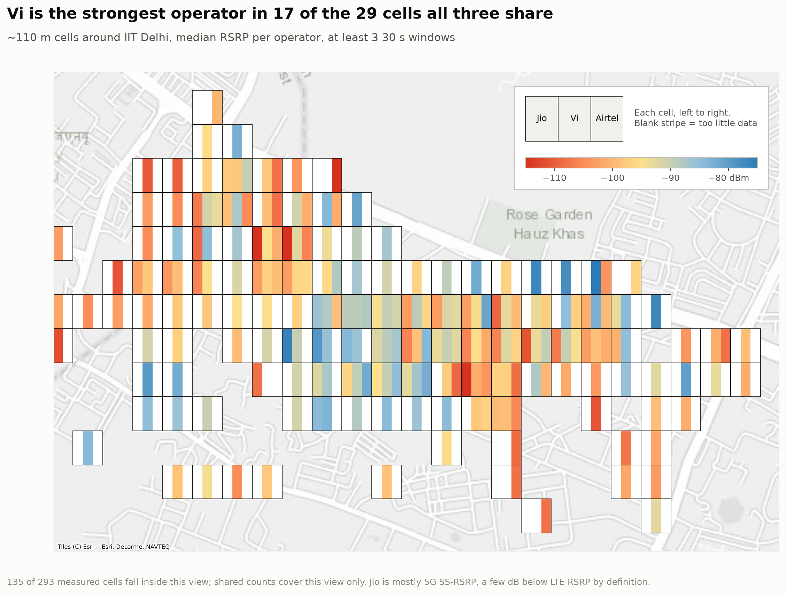
SPATIAL · CAMPUS GRID
Each 110 m square is split Jio | Vi | Airtel and coloured by median signal.
In the 29 squares all three cover, Vi is strongest in 17, Airtel in 10, Jio in 2.
Jio is mostly 5G, whose signal reads a few dB lower by definition. Phones and times differ per operator.
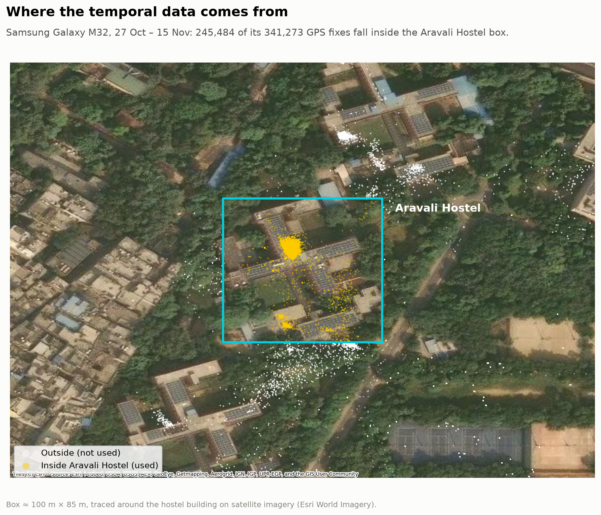
TEMPORAL · WHERE THE DATA COMES FROM
The Samsung M32 spent most of these three weeks in Aravali Hostel. The box is drawn around the hostel building.
245,484 of its 341,273 GPS fixes from 27 Oct to 15 Nov fall inside. The rest, around campus, are left out.
Box ≈ 100 m × 85 m, traced on satellite imagery.
TEMPORAL · ARAVALI HOSTEL
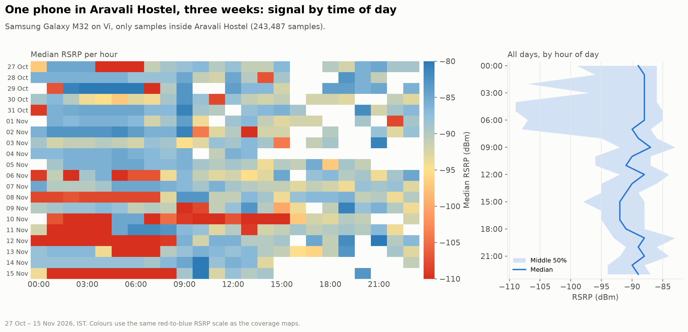
HISTORICAL · SAME PLACE, MONTHS APART
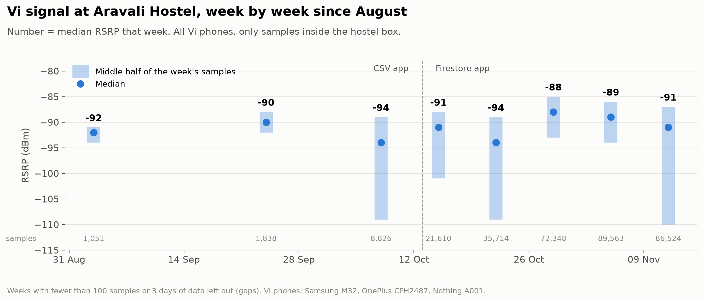
VOLUNTEER CONCERNS · PRIVACY
Three weeks of 5 s fixes reveal where someone sleeps and their daily routine. One phone in this study spent 99% of three weeks at one off-campus address.
VOLUNTEER CONCERNS · DATA COST
3.7 KB
per minute: one batch of 12 samples, measured from recent batches
≈ 5 MB
per day, or about 160 MB a month, before network overhead
< 0.5%
of a 1.5 GB-a-day plan; nothing at all while on Wi-Fi
Data top-up: [₹__ a month]
One-off payment: [₹__]
Wi-Fi-only upload (app change)
NEXT STEPS
Data and charts: presentation_charts/deployment, robustness and operator_agreement in the project repository